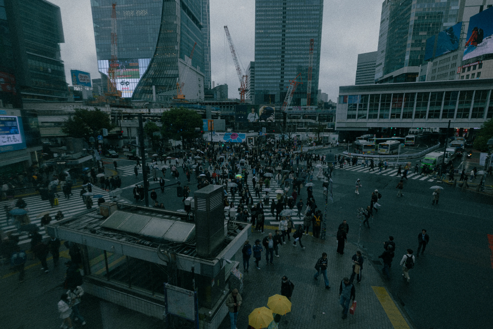
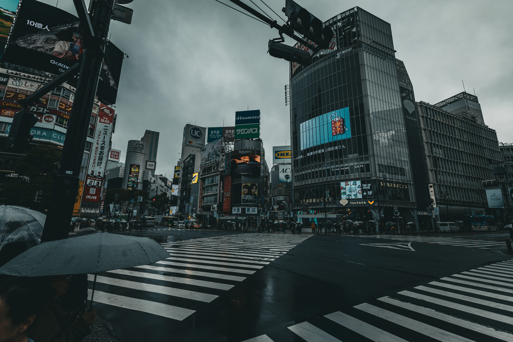
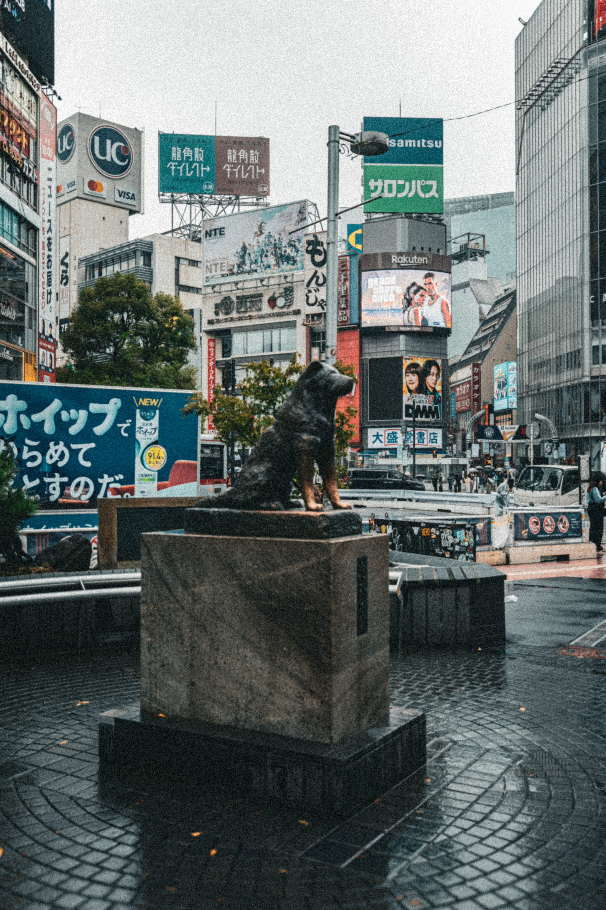
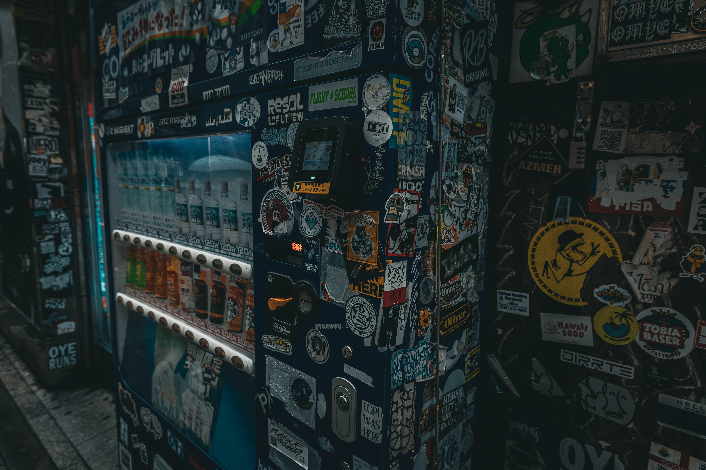
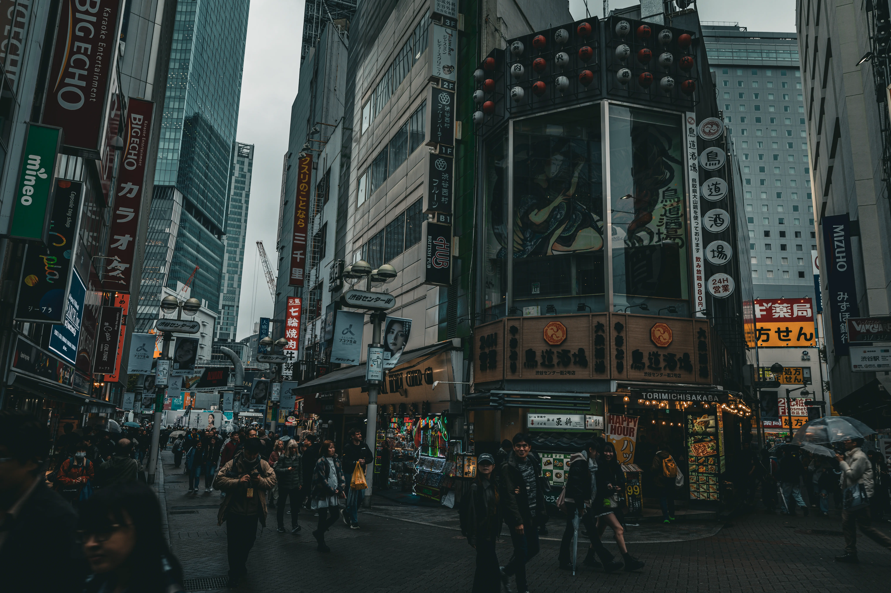
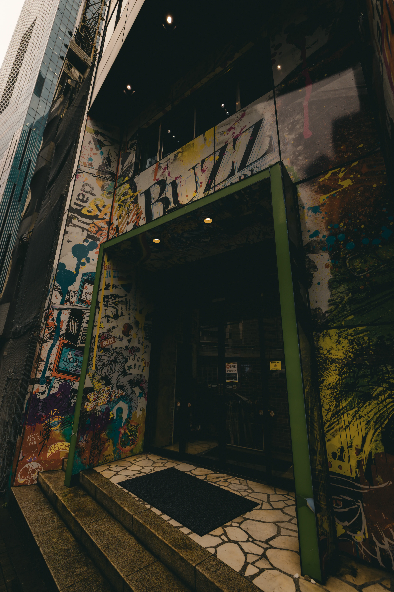
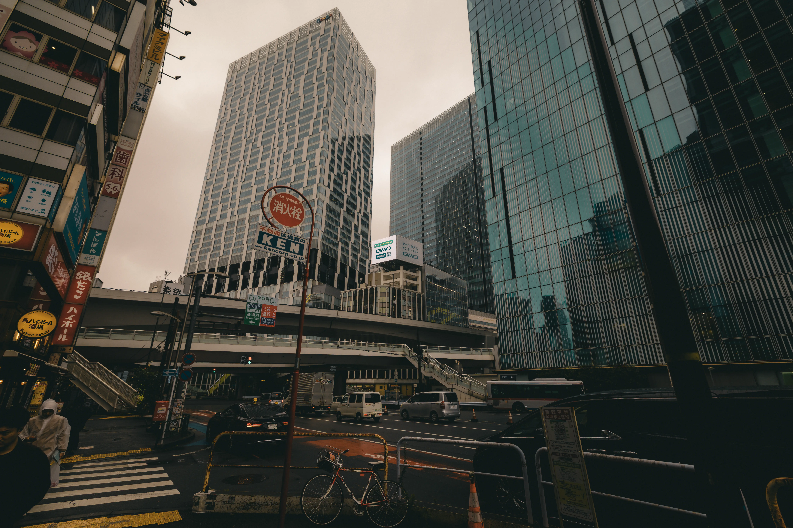
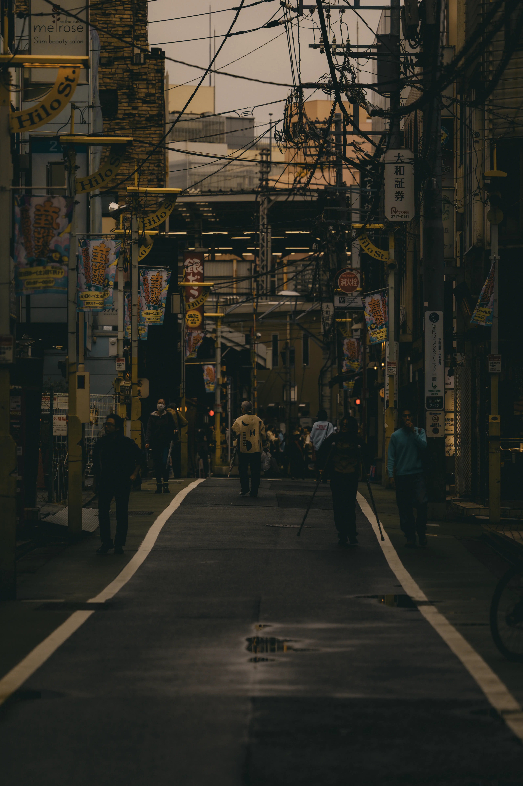
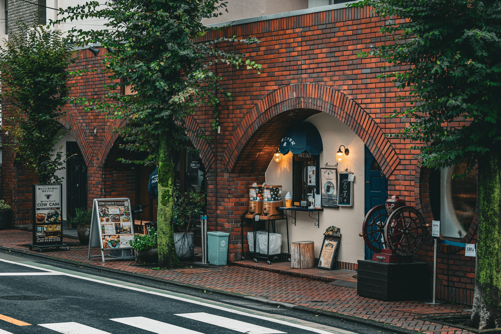
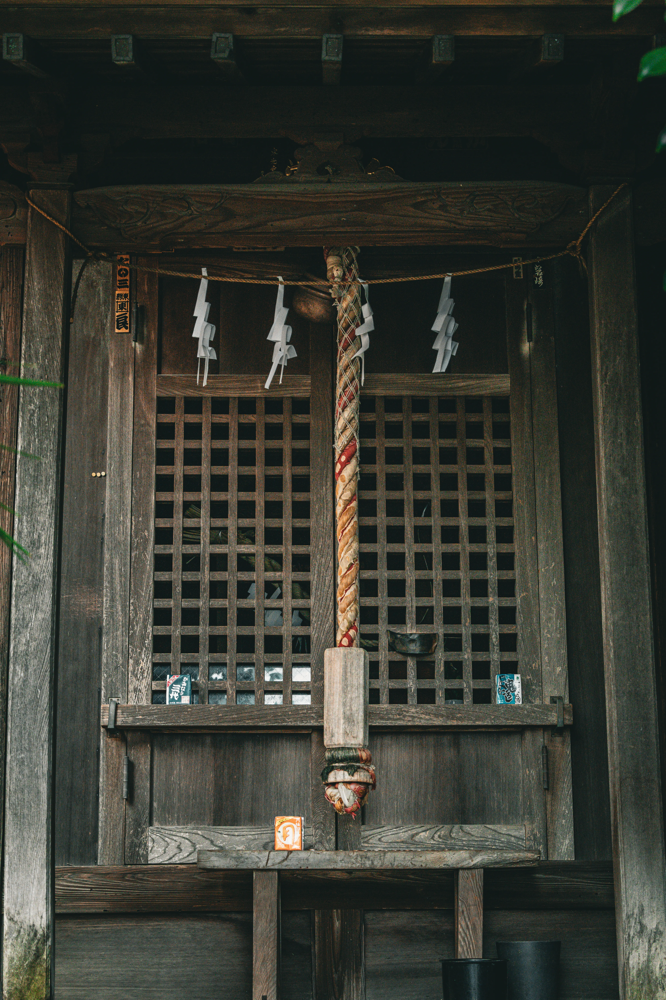
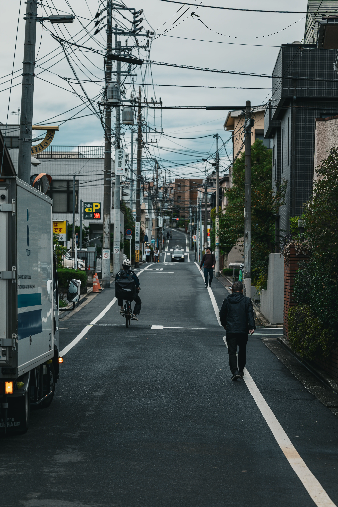
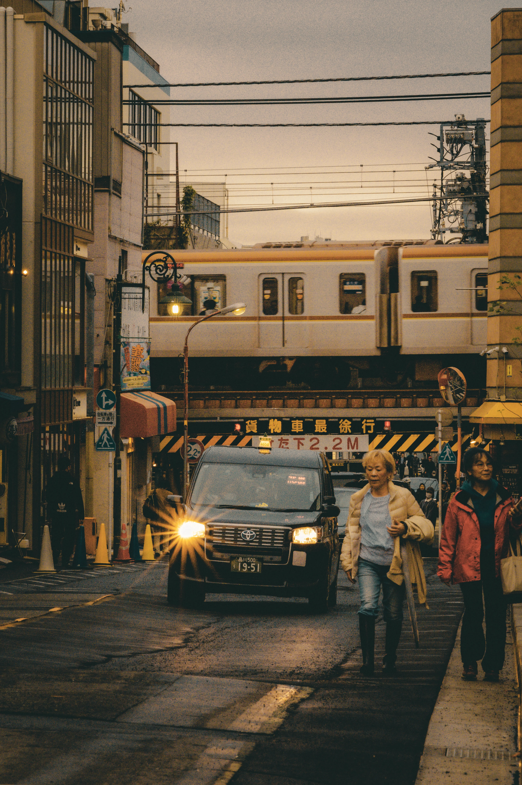
마지막 찍는데 갸루군단 단체로 하교하는 바람에 무서웠음












댓글
수집 당시 댓글 27개
블루스 · 11.05 19:41:46
· 광각은칼망원은총 · 11.05 19:42:33
· 광각은칼망원은총 · 11.05 19:42:53
· 블루스 · 11.05 19:43:26
· ㅇㅇ · 11.07 11:11:20
니껀 · 11.05 19:43:23
메아리이이 · 11.05 19:46:42
리얼라에이스 · 11.05 19:46:56
· 광각은칼망원은총 · 11.05 19:47:44
· 리얼라에이스 · 11.05 19:50:34
위용위용위용 · 11.05 19:49:07
아조씨 · 11.05 20:21:21
ㅇㅇ · 11.07 07:56:08
· ㅇㅇ · 11.07 11:23:52
키나루디안마기 · 11.07 08:03:23
ㅇㅇ · 11.07 08:59:49
ㅇㅇ · 11.07 09:01:58
ㅇㅇ · 11.07 09:09:52
ㅇㅇ · 11.07 09:27:06
ㅇㅇ · 11.07 10:14:03
ㅇㅇ · 11.07 11:01:29
ㅇㅇ · 11.07 12:19:22
ㅇㅇ · 11.07 13:36:23
ㅇㅇ · 11.07 14:40:10
ㅇㅇ · 11.07 15:04:04
JungNu · 11.07 15:33:40
ㅇㅇ · 11.07 15:45:41